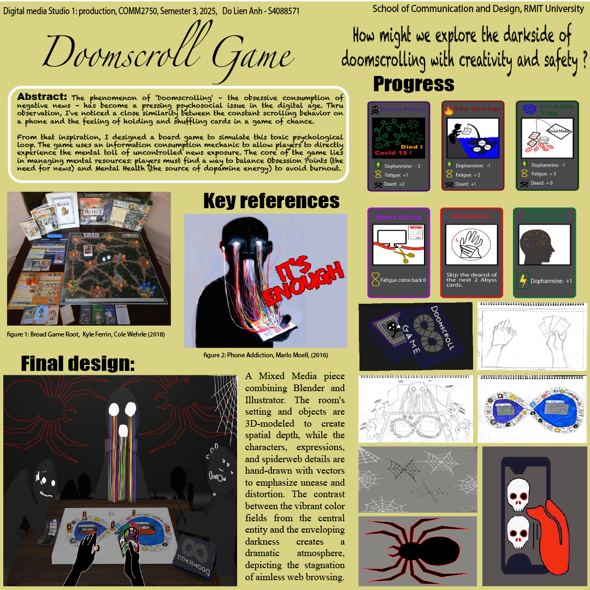
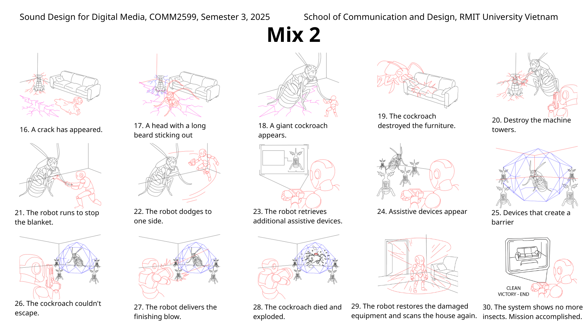

Contents
SHOWCASE
DOOM
SCROLLING
The content of the work depicts stagnation, deadlock, and spiritual exhaustion when people engage in aimless web browsing, facing a continuous stream of negative news that they cannot escape from. This is the first product I designed, a photo that combines both 2D and 3D elements. I tried to apply everything I had learned in class, which was a bit ambitious and led to the painting becoming chaotic.

SHOWCASE
A unique collection of 12 icons illustrating the characteristic means of transportation from various cultures around the world. Designed in the Bauhaus style, each vehicle – from rickshaws, handcarts, reindeer-drawn sleds to double-decker busses or sailboats – is recreated thru basic color blocks like red, yellow, dark blue, and black on a classic beige background.
NATIONAL
STRANSPORT

SHOWCASE
The work is a complete storyboard consisting of 30 scenes telling the story of a smart cleaning robot's battle to clean a messy house infested with insects. Using black-and-white sketch lines combined with red/blue highlights to emphasize actions, mechanical movements, and technological interfaces.
The script is optimally designed for the Sound Design segment, creating a variety of diverse sound materials.
The script is optimally designed for the Sound Design segment, creating a variety of diverse sound materials.
CLEANER
BOT
